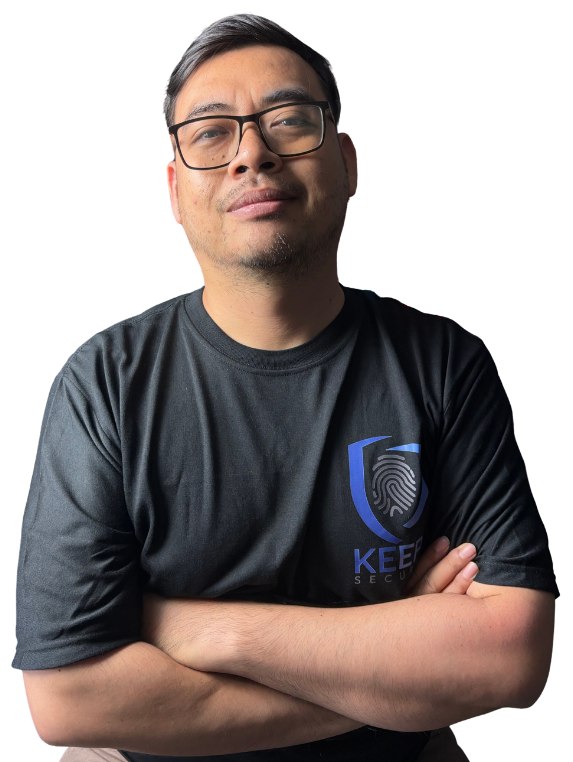

Interactive Learning Program for Social Engineering Awareness
Program pelatihan yang dirancang untuk membantu organisasi meningkatkan awareness terhadap social engineering, memahami perilaku digital berisiko, dan membangun kualitas keputusan yang lebih aman dalam konteks kerja sehari-hari.
Program Highlights
Program Overview
Sesi ini dirancang untuk membantu peserta memahami bagaimana social engineering bekerja, mengapa manusia menjadi target utama, dan bagaimana organisasi dapat memperkuat kebiasaan kerja yang lebih aman melalui awareness yang praktis, relevan, dan dapat diterapkan di tempat kerja.
Target Participant
Karyawan, staf administratif, tim operasional, dan fungsi bisnis lain yang berinteraksi dengan email, chat, file, tautan, dan permintaan kerja sehari-hari.
Learning Focus
Mengenali red flag, memahami faktor manusia yang dimanfaatkan pelaku, dan membangun keputusan yang lebih aman sebelum merespons.
Delivery Experience
Formal namun aplikatif, dikombinasikan dengan studi kasus, diskusi singkat, dan interactive learning simulations.
Program Structure
Struktur program mengikuti alur materi utama dari fondasi awareness hingga langkah praktis yang dapat langsung diterapkan di lingkungan kerja.
Awareness Foundation
Mengapa awareness penting dan mengapa manusia menjadi target utama.
Psychology & Human Factors
Emosi, relasi sosial, kondisi kerja, dan bias penilaian yang sering dimanfaatkan pelaku.
Threat Patterns & Red Flags
Bentuk serangan, pola manipulasi, dan tanda bahaya yang perlu dikenali lebih awal.
Practical Actions & Checklist
Langkah praktis, safe behavior, dan checklist sederhana untuk keseharian kerja.
Resources
Materi pendukung disiapkan untuk memperkuat transfer pembelajaran. Akses resource disesuaikan dengan kebutuhan program, peserta, dan engagement yang berjalan.
Slide Materi Utama
Materi inti yang menjelaskan alur pembelajaran dari awareness, faktor manusia, pola ancaman, hingga langkah praktis yang dapat diterapkan setelah sesi.
Handout Ringkas
Ringkasan poin utama untuk membantu peserta melakukan review cepat setelah sesi dan mengingat kembali red flag yang paling penting.
Checklist Keamanan Pegawai
Checklist praktis yang mendukung pembentukan kebiasaan kerja lebih aman di lingkungan organisasi sehari-hari.
Poster Checklist Keamanan
Materi visual ringkas untuk penguatan awareness di area kerja, ruang tim, atau internal campaign organisasi.
Studi Kasus & Ringkasan Modus
Ringkasan pola ancaman dan studi kasus kontekstual untuk memperluas cara pandang peserta terhadap risiko yang tampak biasa.
Assessment & Interactive Simulations
Assessment digunakan untuk membantu peserta mengenali awareness awal, berpartisipasi aktif selama sesi, dan merefleksikan pemahaman setelah pelatihan selesai.
Pre-Test
Mengukur baseline awareness peserta sebelum materi dimulai dan membantu memetakan tingkat pemahaman awal.
Interactive Simulations
Kumpulan simulasi interaktif berbasis skenario untuk membantu peserta mengalami proses membaca red flag, menilai konteks, dan memilih respons yang lebih aman.
Post-Test
Digunakan untuk melihat peningkatan pemahaman peserta setelah pembahasan materi dan aktivitas workshop selesai.
Speaker
Sesi ini dibawakan oleh pembicara yang berfokus pada cybersecurity awareness, social engineering, dan perilaku digital yang relevan dengan kebutuhan organisasi modern.

Contact
Untuk kebutuhan pelatihan, penyesuaian topik, atau diskusi program, silakan hubungi melalui kanal komunikasi berikut.
Strengthen your organization’s human layer against social engineering
Jika Anda membutuhkan program awareness yang lebih terstruktur, relevan untuk lingkungan kerja nyata, dan didukung oleh materi serta simulasi yang dirancang secara profesional, program ini siap disesuaikan untuk kebutuhan internal perusahaan, workshop tim, maupun corporate learning initiative.